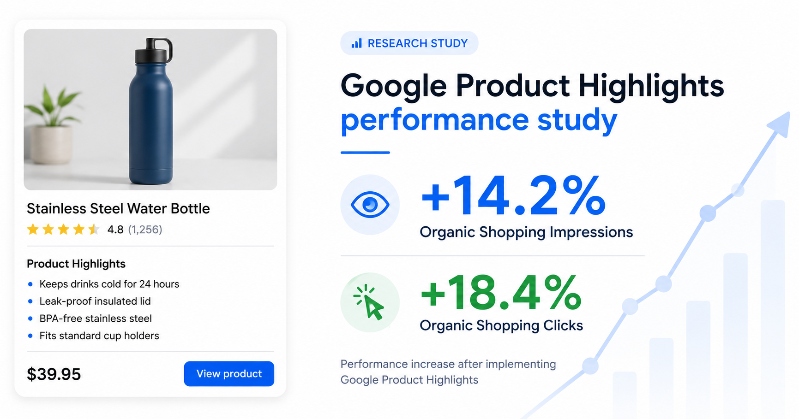

Google Shopping feed explainer
Google Product Highlights: Do They Increase Organic Shopping Traffic?

By Frank Grasso · Last updated: · Retailer identity and commercially sensitive figures masked
What Google Product Highlights are, how to add them, and what happened when FeedOps analysed highlights across 2,000 matched products.
Merchant Center
product_highlight
Organic Shopping
FeedOps Research
Quick answer
Product Highlights were associated with more Organic Shopping exposure.
Products with newly added Google Product Highlights achieved an estimated 14.2% increase in Organic Shopping impressions and 18.4% increase in Organic clicks relative to matched controls. FeedOps found no statistically significant change in Organic CTR or Paid Shopping performance.
Key findings:
Google Product Highlights are optional product_highlight attributes in Merchant Center. In this FeedOps study, they were associated with more Organic Shopping impressions and clicks, but not a statistically significant change in Organic CTR or Paid Shopping performance.
Definition
What are Google Product Highlights?
Google Product Highlights are short, structured statements that explain a product's most important benefits and features inside a Google Shopping feed. Retailers submit them through the product_highlight attribute in Google Merchant Center.
They are optional, but they may help Google understand and present products across traditional Search and AI-driven shopping experiences. The important commercial question is whether they produce measurable performance improvements.
Unlike a full product description, highlights break key information into concise points that shoppers and Google can understand quickly.
Examples
Google Product Highlights examples.
For example, a retailer selling a nutritional supplement might provide:
- Contains 30 individual servings
- Suitable for vegan diets
- No artificial colours or flavours
- Convenient once-daily format
- Packaged in a recyclable container
These are not advertising slogans or lists of SEO keywords. They are structured facts and benefits designed to answer common product questions.
Google's formatting guidance:
Google allows up to 150 characters per highlight and recommends four to six per product. The attribute is optional, but at least two highlights are required when it is used. Google permits a maximum of 100. Read Google's Product Highlight specification.
Google surfaces
How does Google use Product Highlights?
Product Highlights give Google additional structured information about what a product offers and why it may be relevant to a shopper.
Google says this information can help customers discover products across AI-driven surfaces, including AI Mode in Google Search, while also enhancing traditional search experiences. This connects to the broader Google Shopping Graph, where product feeds, product pages and structured data help Google understand products. That does not mean Google displays every submitted highlight, or that adding highlights guarantees traffic.
The opportunity is broader than making a listing look better. Highlights give Google more explicit information with which to understand a product, match it with shopping activity, and answer detailed product questions. Google's guidance on rich product pages also explains how product information can be used across Google surfaces.
Product data
Google Product Highlights versus product details.
Product Highlights communicate benefits. They are short, shopper-friendly statements explaining what is useful or distinctive.
Product details communicate specifications. They contain structured technical information such as material, capacity, dimensions, or compatibility. Google documents these separately in its Product Detail specification.
Simple difference:
Highlight: Lightweight construction makes it easy to carry. Detail: Product weight: 1.2 kg.
A strong product feed can contain both. One helps shoppers understand the benefit; the other gives Google a verifiable specification. For broader product data improvement, use the Google Shopping feed optimization guide.
Implementation
How to add Google Product Highlights.
You can add the product_highlight attribute through your primary product data source, a supplemental data source, Google Sheets or text feeds, or the Merchant API. The right method depends on how your catalogue is connected to Merchant Center and how your current product feed management workflow is set up.
Primary feed or ecommerce integration
Add the repeated product_highlight field to the product data generated by your ecommerce platform or feed-management system. Keep each highlight attached to the correct product ID.
Supplemental data source
A supplemental source can add highlights without replacing the primary feed. Match each row to the existing Merchant Center product ID, then provide the highlight values for that product. See Google's guidance on supplemental data sources.
Google Sheets or text feeds
Separate multiple highlights according to Google's repeated-field formatting rules. Values containing commas or colons require careful quotation and escaping; Google recommends TSV over CSV when punctuation makes the data difficult to parse.
Merchant API
Retailers managing product data programmatically can submit repeated highlight values through the Merchant API. Google also explains how primary sources, supplemental sources and the API support product information in its conversational attributes guidance.
Why it matters
Why should retailers use Google Product Highlights?
First, highlights make important product information easier to consume. Shoppers should not have to search a long description for the product's main benefits.
Second, highlights give Google structured information that may not be clear from the title or description alone. This can help Google understand how the product relates to detailed searches and shopping questions. If titles are also weak, start with the Google Shopping title optimization guide.
Third, they prepare product data for AI-driven discovery. Google explicitly identifies Product Highlights as information that can support AI Mode and other AI-driven surfaces.
How many products are missing highlights?
A free FeedOps Google Shopping Feed Audit can identify products with missing Google Product Highlights and quantify the gap across your catalogue. The audit is read-only, does not require Google Ads access, and does not make changes to Merchant Center.
FeedOps Research
How we tested Google Product Highlights.
FeedOps examined a large Australian retailer with a substantial catalogue and established Google Shopping activity.
The retailer added highlights to approximately 1,000 products. Another approximately 1,000 products remained without highlights and formed the control group.
Every optimised product was matched with a similar control product using its performance before the change. Matching considered Organic and Paid Shopping impressions, clicks and previous performance trends. The matched groups showed strong baseline balance.
FeedOps then used a difference-in-differences analysis: how performance changed for the optimised products, less the change experienced by controls during the same period. Confidence intervals and statistical significance were calculated using 5,000 paired bootstrap samples.
Data masking:
The retailer's identity, exact dates and raw traffic volumes are withheld for commercial confidentiality. Relative effects and statistical results have not been altered.
Results
Google Product Highlights study results.
| Metric | Estimated effect | 95% confidence interval | Result |
|---|---|---|---|
| Organic impressions | +14.2% | +3.3% to +25.5% | Significant |
| Organic clicks | +18.4% | +6.4% to +32.2% | Significant |
| Organic CTR | +0.003 pp | -0.080 to +0.089 pp | Not significant |
| Paid impressions | +4.7% | -2.7% to +13.0% | Not significant |
| Paid clicks | +0.3% | -9.9% to +12.5% | Not significant |
| Paid CTR | -0.069 pp | -0.168 to +0.030 pp | Not significant |
The Organic impression result had a p-value of 0.006, while the Organic click result had a p-value of 0.004. Both passed the conventional 5% threshold for statistical significance.
Effect summary
Organic and Paid Shopping effects.
Organic impressions
+14.2%
Organic clicks
+18.4%
Paid impressions
+4.7%
Paid clicks
+0.3%
Interpretation
The most important result was not CTR.
The optimised products received significantly more Organic impressions and clicks, but their Organic CTR remained essentially unchanged. For the wider organic opportunity, see the guide to Google Shopping free listings.
This does not suggest that each impression became more persuasive. It indicates that the products received more opportunities to be discovered, and the additional impressions produced clicks at approximately the existing click-through rate.
Product Highlights appear to have expanded Organic Shopping exposure rather than simply making existing impressions more clickable. For retailers, this may be the more valuable effect. A product cannot earn a click if Google does not surface it in the first place.
Why was there no significant Paid effect?
Paid Shopping performance is influenced by campaign structure, bids, budgets, audience signals, conversion history, competition and auction pressure. Adding product information does not automatically cause Google Ads to allocate more budget or enter a product into more auctions. Feed quality still matters, but it needs to work alongside practical Google Shopping ads management.
The result does not prove that highlights can never help Paid Shopping. It means this study did not detect a reliable Paid effect during the period analysed.
Do Google Product Highlights cause more traffic?
Not conclusively. This was a matched observational study, not a randomised controlled experiment. Matching created highly comparable groups, but it cannot eliminate every possible difference between them.
The appropriate conclusion is that adding Product Highlights was associated with a statistically significant increase in Organic Shopping impressions and clicks relative to comparable products that remained without highlights.
How to
How to test Google Product Highlights.
- Select a representative group of eligible products with enough Organic Shopping activity to measure.
- Create four to six factual, product-specific highlights, supported by clean product type and Google product category data where relevant.
- Keep a comparable group unchanged as a control.
- Measure Organic and Paid impressions, clicks and CTR separately.
- Run the test across several measurement periods to reduce noise from seasonality or catalogue changes.
- Expand the optimisation if the result is commercially meaningful and the product data can be maintained reliably.
Found the gap? FeedOps can help fix it.
FeedOps can build custom AI agents tuned to your brand and product categories to create relevant, product-specific highlights at catalogue scale, then help your team validate, test and roll out the improvements. Talk to FeedOps about custom agents.
FAQ
Google Product Highlights FAQs.
What is the Google Product Highlights attribute?
The product_highlight attribute is an optional, repeated Google Merchant Center attribute used for short, benefit-led statements about a product. It is separate from the product title, description, product type, Google product category and product detail attributes.
Are Google Product Highlights required?
No. The attribute is optional for all products. If you choose to use it, Google requires at least two highlights and recommends four to six.
How many Product Highlights should I add?
Google recommends four to six highlights. If you submit the attribute, provide at least two. Each highlight can contain up to 150 characters, and Google allows a maximum of 100.
Where can Google Product Highlights appear?
Google says highlights can support product discovery across AI-driven surfaces such as AI Mode and can enhance traditional Search experiences. Google decides whether and how submitted information is used, so appearance is not guaranteed.
What should Google Product Highlights contain?
Product Highlights should contain concise, factual benefits or features that help shoppers evaluate the specific product. Good highlights answer common shopper questions and make important product benefits easy to scan.
What should I avoid in Product Highlights?
Avoid promotional claims, prices, delivery details, sale dates, keyword lists, links, business history, product category paths, comparisons with other products, gimmicky capitalisation and information about accessories or other products.
What is an example of a good Product Highlight?
A good Product Highlight is factual and product-specific, such as "Keeps drinks cold for 24 hours", "BPA-free stainless steel", or "Fits standard cup holders". It should describe the product itself rather than a promotion or search keyword.
What is the difference between Product Highlights and product details?
Product Highlights communicate benefits in short shopper-friendly statements. Product details communicate technical specifications, such as material, capacity, dimensions, compatibility or warranty information.
Are Product Highlights the same as product descriptions?
No. A product description is longer body copy that explains the product in more detail. Product Highlights are short repeated statements designed to be scanned quickly and submitted through the product_highlight attribute.
Do Product Highlights improve Google Shopping ads?
They can enrich the product data available to Google, but our study did not detect a statistically significant Paid Shopping effect. Paid results remain influenced by bids, budgets, campaign structure, competition and other signals.
Can Product Highlights improve Organic Shopping performance?
In this matched observational study, they were associated with 14.2% more Organic Shopping impressions and 18.4% more clicks. That result is evidence from one retailer, not a guarantee for every catalogue.
Do Product Highlights improve click-through rate?
The FeedOps study did not detect a statistically significant Organic CTR improvement. The main observed effect was increased Organic Shopping exposure, with clicks rising because the products received more impressions.
Do Product Highlights guarantee more traffic?
No. Product Highlights do not guarantee more impressions, clicks or revenue. They give Google additional structured product information, but results still depend on product demand, competition, Merchant Center eligibility, feed quality and how Google uses the information.
How do I add Product Highlights to Merchant Center?
You can add Product Highlights through a primary product data source, a supplemental data source, Google Sheets or text feeds, or the Merchant API. The right method depends on how your product catalogue is connected to Merchant Center.
Can I add Product Highlights with a supplemental feed?
Yes. A supplemental data source can add Product Highlights without replacing the primary feed. Each row must match the existing product ID in Merchant Center so the highlight values attach to the correct product.
Can Product Highlights cause Merchant Center issues?
They can cause issues if they are formatted incorrectly or violate Google's requirements. Common problems include too few highlights, punctuation not escaped correctly in text feeds, promotional wording, keyword stuffing, links, category paths or information that does not describe the product itself.
Which products should get Product Highlights first?
Start with products that have meaningful benefits or features not obvious from the title, high Organic Shopping opportunity, thin descriptions, strong commercial value, or enough traffic to measure before-and-after performance.
How should retailers test Product Highlights?
Retailers should create highlights for a representative product group, keep a comparable control group unchanged, and measure Organic and Paid impressions, clicks and CTR separately across multiple periods. This helps separate real impact from normal catalogue and demand changes.
Are Google Product Highlights worth using?
They are worth testing where product data is thin or where catalogue-level product benefits are not clear in titles and descriptions. In the FeedOps study, the benefit was increased Organic exposure, with additional clicks following at roughly the existing click-through rate.